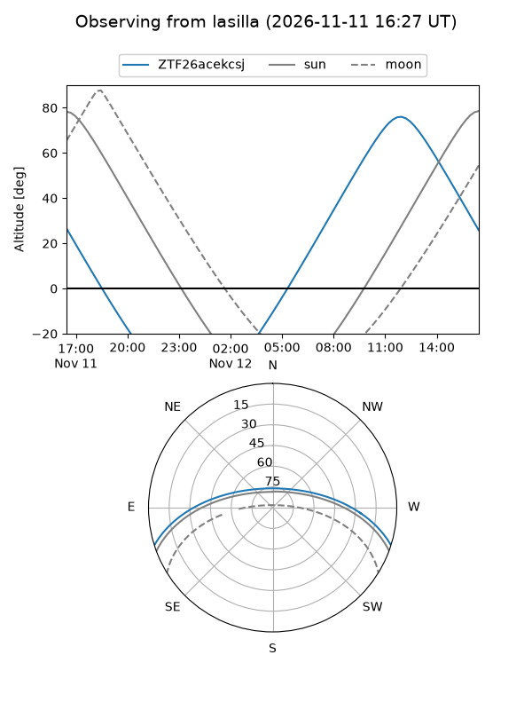
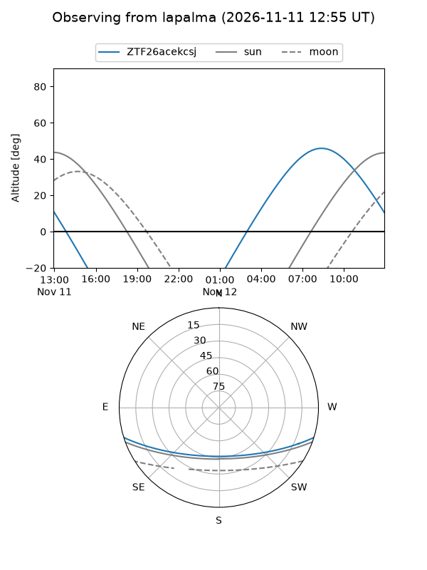
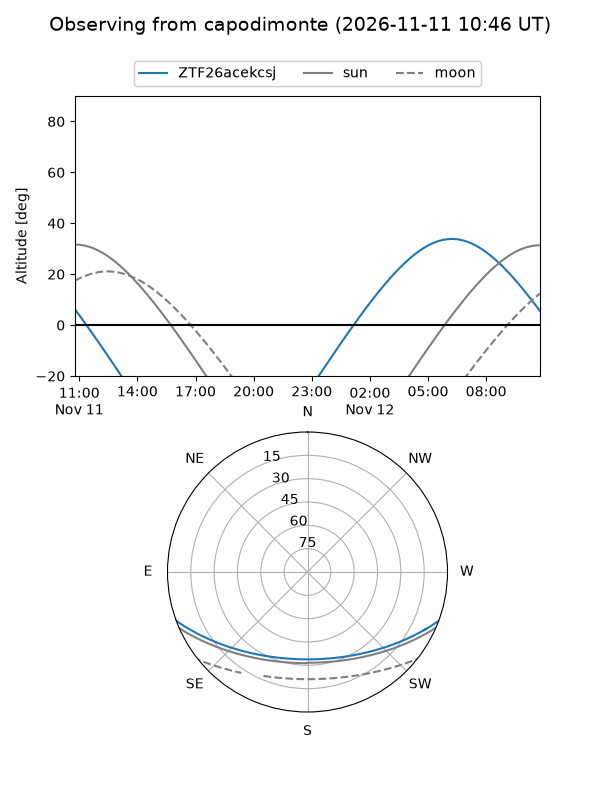
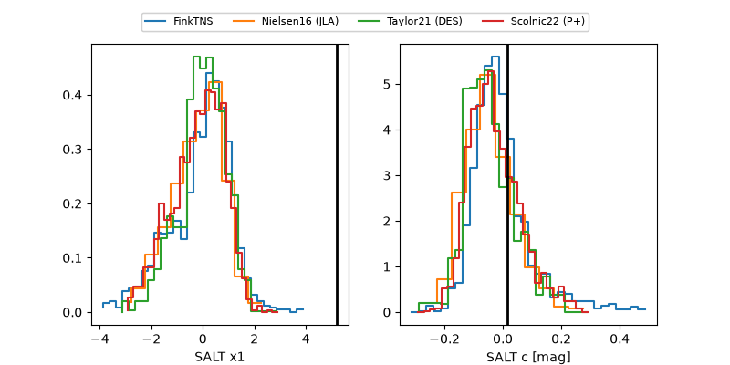

ZTF26acekcsj
Target ZTF26acekcsj at 2026-11-12 02:37
Aliases and brokers:
FINK-ZTF: ztf.fink-portal.org/ZTF26acekcsj
Lasair-ZTF: lasair-ztf.lsst.ac.uk/objects/ZTF26acekcsj
ALeRCE-ZTF: alerce.online/object/ZTF26acekcsj
Direct TNS query: direct search
alt names
ZTF26acekcsj (ztf,fink_ztf)
Coordinates:
equatorial (ra, dec) = 158.8054,-15.15698
equatorial (HMS+DMS) = 10:35:13.29,-15:09:25.11
galactic (l, b) = (260.7922,+36.33385)
Flags:
peak dt: +2.6
Photometry:
last ztfr=19.31
3 ztfr detections
Lightcurve
Visibility



Additional plots
